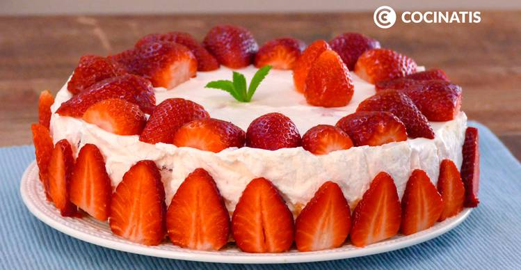

Pastel cremoso de fresa  Ingredientes 3 tazas de harina de trigo 2 cucharadas de Azucar 1 pizca de sal 9 cucharadas de mantequilla 2 yemas 4 huevos medianos 1 cucharada de agua fria 2 tazas de fresas 4 cucharadas de vino tinto Ver Receta Completa
Pastel Arcoiris Ingredientes 2 cajas de harina 2 tazas de agua 1 taza de aceite vegetal 6 huevos 2 paquetes de vegetales en gel Ver Receta Completa